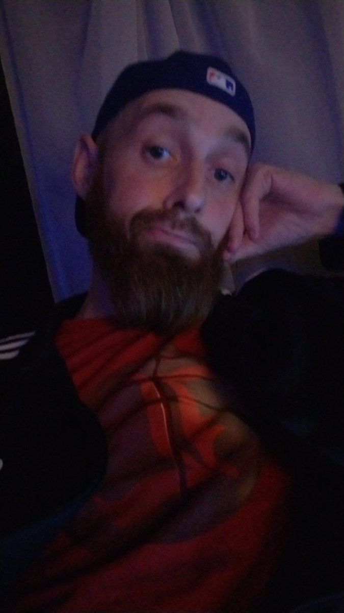
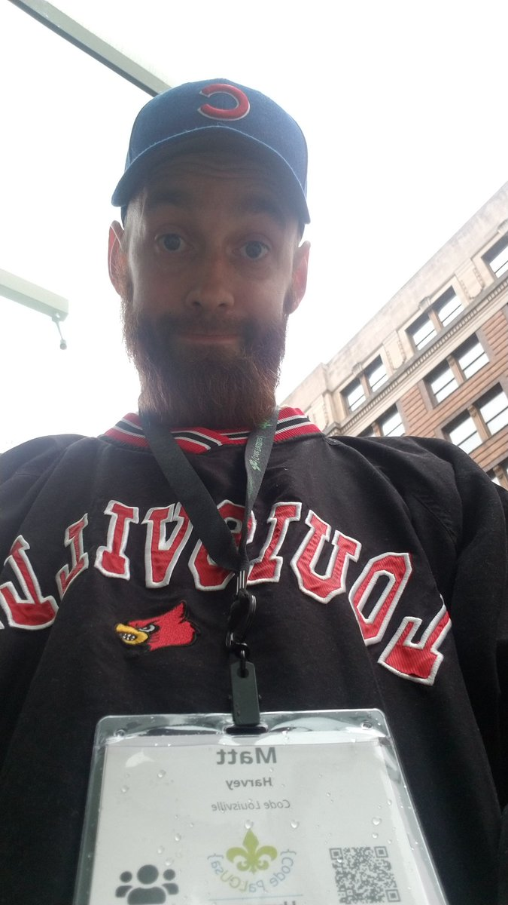
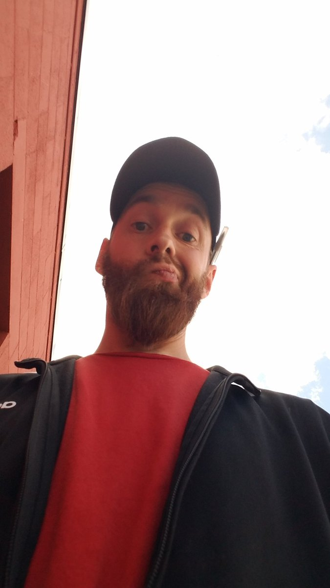

I'm a lover of all things technical who lives, works and studies in the great city of Louisville, Ky. I take a lot of pride in my status as a Louisvillian and aspire to bring a bit of the culture, hospitality, cuisine, history and general passion this city represents with me everywhere I go. From the Ohio river which brought us all together, our place in bourbon history, to our passion for college athletics there's very little about the city I don't love. I do however love to travel, witness, and taste the things other cultures have to offer. Whether it be a road trip or a cross country venture to camp, museum hop, or just generally hang out and take in what another community has to offer, I'm always trying to sponge up culture from wherever I get the pleasure to be.

In my free time I enjoy gaming, both pc and console. I'm also an avid baseball fan specifically the Chicago Cubs, although I enjoy great pitching wherever I can find it. I love to patronize MLB ballparks or even MiLB ballparks wherever I'm lucky enough to find them. Sharing thoughts and memories with other baseball fans is one of my favorite things to do. I'm also an avid fan of the Louisville NCAA program in all it's manifestations and am often known to be seen at football, basketball, baseball or soccer games. I play guitar primarily, but can play a variety of instruments. I have a background in funk and jazz but also enjoy rock, hip hop, r & b, blues and just about any other musical style I have ever interacted with.

In what I now call 'my former life' I spent a decade behind a bar or serving drinks and food in a parlor or dining room. The service industry will always be a passion of mine and there are few things that express the essence of a place to me more clearly or directly than the food and drink that are distinct to it's people. I've worked in a variety of atmospheres from prohibition style speakeasies, to sports bars, to arenas, to special event spaces. I thrive on creativity in the concoctions I create behind a bar and I hope to be able to apply this creativity, as well as the hospitality skills I have developed to my new life in development. It's a goal of mine to make my digital libations every bit as unique and delicious as those I have created in my life of hospitality.